Repères coloniaux, peuple pivot Kukama, mosaïque du Loreto
→
02
Les Missions et Conquêtes
Orellana, jésuites et franciscains : contact, réductions, résistances
→
03
L'Ère du Caoutchouc
Boom du latex (1880–1914) : fortunes, esclavage et violence
→
04
L'Amazonie contemporaine
Intégration nationale, pétrole, coca et mouvements indigènes
→
01
Partie 01
Qui vivait en Amazonie ?
Repères coloniaux · peuple pivot Kukama · mosaïque du Loreto
01 · Qui vivait en Amazonie
Chronologie : 7 grandes étapes
I
jusqu'en 1542
Période indigène
400+ nations, chasse-pêche-cueillette, cultures millénaires. Sociétés dispersées le long des fleuves, sans État centralisé mais avec des réseaux commerciaux et diplomatiques denses.
II
1542–1769
Pénétration missionnaire
Orellana, jésuites, franciscains : réductions, baptêmes forcés, résistances acharnées. Première cartographie des fleuves et premières descriptions écrites des peuples amazoniens.
III
1769–1880
Naissance du capitalisme
Expulsion des jésuites, indépendance des républiques, commerce fluvial en expansion. L'Amazonie entre dans l'économie mondiale sans encore connaître l'extraction massive.
IV
1880–1914
Époque du caoutchouc
Boom du latex, esclavage par dette, fortune et violence. Iquitos devient une capitale mondiale du caoutchouc ; le Putumayo connaît l'une des pires tragédies coloniales du XXᵉ siècle.
V
1914–1943
Récession économique
Effondrement du caoutchouc amazonien face aux plantations malaisiennes. Conflits frontaliers, dépopulation des territoires indigènes, relégation de l'Amazonie en marge nationale.
VI
1943–1970
Intégration nationale
Routes, colonisation interne, industrialisation naissante. L'État cherche à « civiliser » et peupler l'Amazonie, souvent au détriment des peuples autochtones.
VII
1970–1990
Pétrole, coca et violence
Extraction pétrolière, narcotrafic, guerres frontalières et émergence des mouvements indigènes. L'Amazonie devient un enjeu géopolitique et écologique planétaire.
01 · Qui vivait en Amazonie
+400 nations : une mosaïque millénaire
Langues multiples
Groupes indépendants, souvent en guerre, parlant des langues distinctes : impossible à classifier en une seule entité.
Identité par le fleuve
Chaque tribu portait le nom de son chef (curaca), de sa rivière ou de son animal totem : pas de notion d'ethnie générique.
« L'Amazonie est une mosaïque formée d'environ 400 groupes humains et leurs cultures correspondantes. »
Ier Encuentro de Pastoral de Misiones en el Alto Amazonas, Iquitos, 1971
Vie dispersée
Rancherías de 40 à 500 personnes, semi-nomades, réparties sur des territoires immenses, lien fort à la maloca.
Des liens malgré les conflits
Alliances commerciales, mariages inter-tribus, fêtes communes, la guerre cohabitait avec la diplomatie.
01 · Qui vivait en Amazonie
Société, autorité et économie des tribus
FAMILLE
La ranchería, cellule de base
40 à 500 personnes liées par la parenté : c'est la ranchería, le groupe social de base. Elles vivent sous un même toit dans la maloca, grande maison commune en bois et en feuilles de palmier où se partagent repas, rites et hammacs.
Ranchería ≠ maloca. La ranchería, c'est le « qui » (la communauté) ; la maloca, c'est le « où » (l'habitat). Semi-nomadisme dicté par la chasse, la pêche et les saisons : le groupe peut déplacer sa maloca.
AUTORITÉ
Le curaca, le prestige
Le curaca dirige la ranchería : il organise les expéditions, répartit les prises et arbitre les conflits. Son autorité ne repose ni sur la coercition ni sur un rang héréditaire fixe, mais sur le prestige : générosité, éloquence, maîtrise de la forêt et des rites.
Pouvoir consenti. Si le chef est jugé avare ou injuste, les familles peuvent le quitter. L'anthropologie parle d'une « économie politique des personnes » : le leader magnifie son groupe en le nourrissant et en le protégeant.
ÉCONOMIE
Pêche, cueillette, chasse
Économie de subsistance mêlant pêche, chasse, cueillette et chacra, jardin-forêt de yuca et maïs. La chicha (boisson fermentée) scelle les fêtes et les échanges. En saison sèche, la maloca se mobilise pour les pêches collectives au barbasco, poison végétal qui étourdit les poissons dans les bras morts.
Redistribution. Les bonnes prises circulent selon des normes de réciprocité : pas d'accumulation individuelle, la nourriture unit la communauté. Pêche et chasse complètent l'agriculture selon les saisons et les ressources du territoire.
GUERRE
Guerre & défense
Conflits entre rancherías pour le territoire, les captives matrimoniales et le prestige guerrier. La violence n'est pas sans règle : elle obéit à un schéma de prédation et de familiarisation : l'ennemi capturé peut être intégré dans le groupe, adopté comme gendre ou enfant.
Idéal masculin. Le guerrier accumule prestige par les raids réussis ; mais la guerre structure aussi l'échange de personnes entre groupes, loin de la guerre d'État moderne.
RITUELS & ALLIANCES
Clans, mariages et rites de passage
Les rituels (initiation, fête, deuil, réconciliation) scellent le lien social au-delà de la ranchería. Les mariages inter-groupes tissent des alliances : service du gendre, échange de biens, intégration des captifs. Le système de clans ou phratries (totems, ancêtres fondateurs) définit qui peut épouser qui.
Focus Kukama. Les Kukama-Kukamiria s'organisent en sangres (groupes patrilinéaires liés à un animal ou une plante-totem). Le mariage unit deux sangres différentes ; agriculture saisonnière, pêche et cosmologie fluviale (tunchis, bufeo) rythment chaque étape de la vie.
GUÉRISON
Les figures de guérison, piliers de la vie amazonienne
Chaque peuple compte des spécialistes du soin et du sacré : yachaj (kichwa), payé (Brésil), onanya (Shipibo), curandero·a… Ils soignent les maladies, protègent la communauté, accompagnent les rites d'initiation et médient entre mondes visible et invisible.
Leur savoir des plantes (ayahuasca, tabac, chacruna…) et leur prestige social en font des figures centrales, au même titre que le curaca pour l'autorité politique.
VOCABULAIRE
« Chaman » : un mot à relativiser
« Chaman » vient du toungouse šaman (Sibérie), généralisé par l'anthropologie occidentale (Eliade). Ce mot recouvre mal la diversité amazonienne ; préférer les termes locaux ou « guérisseur·euse / curandero·a ».
À retenir. Chaque peuple nomme ses propres figures (yachaj, payé, onanya…) : éviter « chaman » comme terme générique dans la suite du module.
01 · Qui vivait en Amazonie
Cosmovisión et vie quotidienne
Animisme & figures de guérison
Chaque être porte une force vitale. Des spécialistes (yachaj en kichwa, payé au Brésil, onanya chez les Shipibo…) médient entre mondes visible et invisible : ils soignent, protègent, accompagnent les rites.
La fête comme lien social
Fiestas (victoire, mariage, initiation) : tous participent. Le masato (yuca fermentée) est universel. La fête = réconciliation.
« La selva vive su tiempo de cultura mítica, de rasgo lunar. Es una cosmovisión mágico-religiosa pannaturalista. »
J.V. San Román, Perfiles Históricos, 1994
Éducation par la liberté
L'enfant apprend en vivant la forêt. Il accompagne les adultes à la chasse. Les rites d'initiation marquent le passage à l'âge adulte.
Une forêt habitée, pas sauvage
La selva n'est pas un obstacle mais un partenaire. Savoir fin des plantes, des animaux, des cycles, transmis oralement.
01 · Qui vivait en Amazonie
Repère historiqueavant 1542
Les Encabellados : maîtres du Napo
Une « nation » guerrière du bassin du Napo, parmi les premières à affronter les Espagnols.
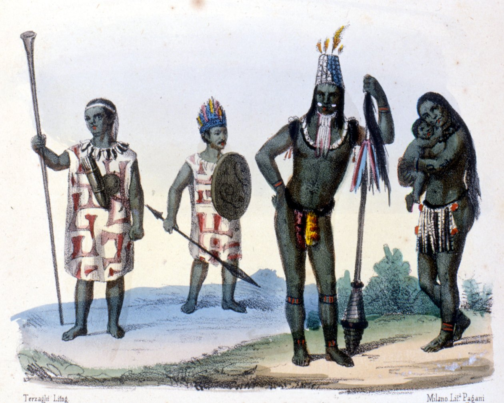
Où vivent-ils ?
Des Andes de Quito jusqu'à la boca del Putumayo
Bassin du Napo, Aguarico, Cuyabeno
Centre : Pantoja (confluence Napo-Aguarico)
Qui sont-ils ?
Ethnonyme colonial : « ceux aux longs cheveux »
Regroupe Cofanes, Ciecoya, Payaguas, Siona…
Héritiers directs : Secoya-Siona (Piojés)
01 · Qui vivait en Amazonie
Repère historiqueavant 1542
Les Encabellados face à la conquête
Premières expériences sanglantes de contact européen sur le Napo.
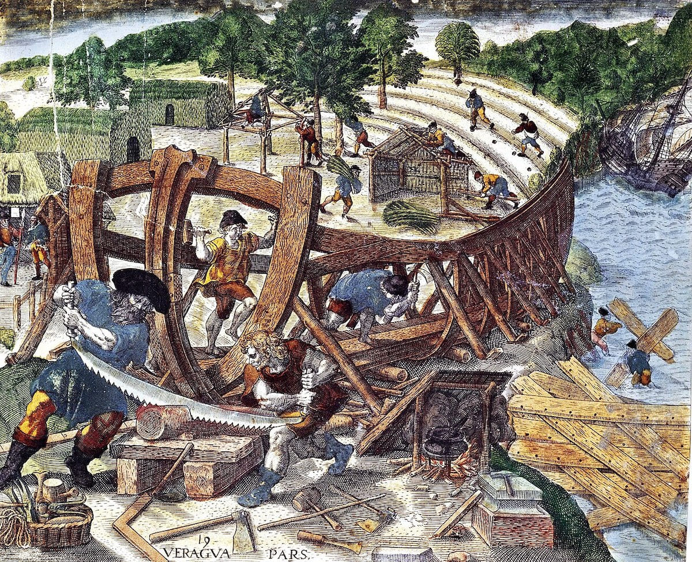
Orellana (1541-42)
Traverse leur territoire en descendant le Napo
Réputation « aguerri et indépendant » dès le XVIᵉ s.
Peuple-clé du récit de la conquête (ch. 02)
Missions & révoltes
P. Ferrer fonde 3 pueblos (1604), tué en 1611
Colonie d'Ante sur l'Aguarico détruite (1637)
Soulèvements 1635 et 1666 contre les missions
01 · Qui vivait en Amazonie
Repère historiqueavant 1542
Les Omaguas : « seigneurs des îles »
Documentés par Carvajal en 1542 — une des sociétés les plus denses de l'Amazone.
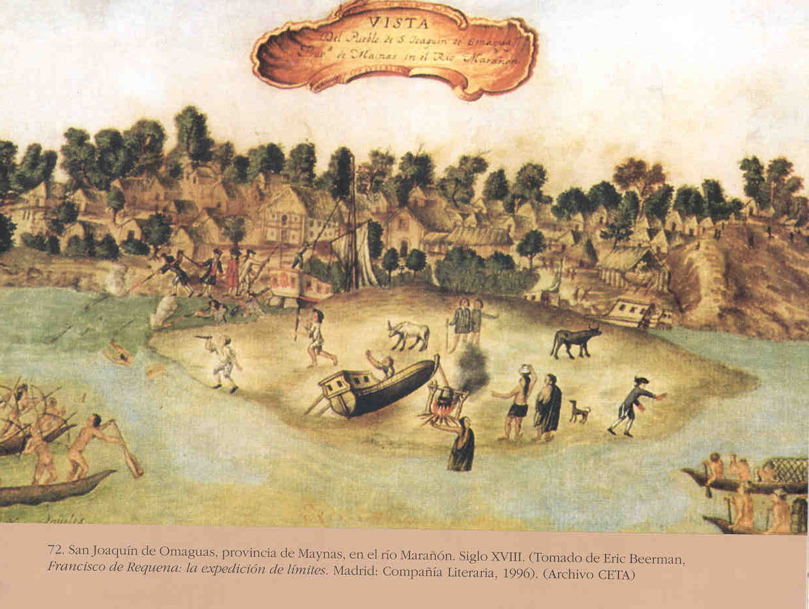
Un empire fluvial
Peuple tupi, migrations depuis l'Amazone central
Pueblos denses sur les llanuras inondables
Du Napo au bas Putumayo, îles du bas Amazone
Ce que dit Carvajal
~80 légues de territoire, routes vers l'intérieur
Pueblos de plusieurs lieues de long
50 000 hommes armés ? Chiffre discutable, mais densité réelle
01 · Qui vivait en Amazonie
Repère historiqueavant 1542
Les Omaguas : culture et effondrement
De la céramique célèbre à la destruction par les Portugais (1710).
Art & corps
Céramique « la meilleure du monde » (Carvajal)
Crânes allongés par compression (prestige)
Tissus colorés admirés par Acuña (1638)
Après le contact
15 000 en 1645 → chute (épidémies, esclavage)
Révolte 1709, puis armada du Pará (1710)
40 pueblos du P. Fritz détruits · ~3 500 restants
01 · Qui vivait en Amazonie
Repère historiquelien Iquitos
Les Ikíitu : les premiers habitants d'Iquitos
Ce peuple donne son nom à la capitale du Loreto.
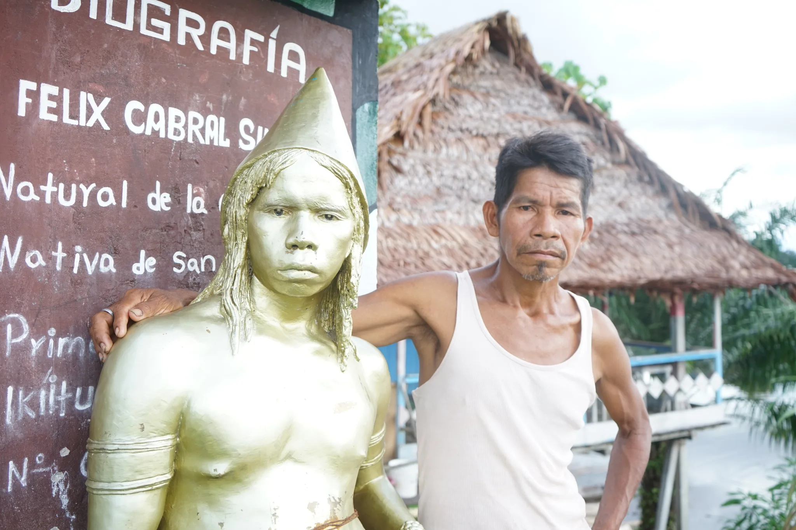
Territoire & ville
Bassin Nanay, Pintuyacu, Chambira (~5 000 avant contact)
8 missions jésuites (1740-1767)
« Caserío de los Iquito » (1789) → Iquitos
Aujourd'hui
De 5 000 à ~150 en 1920 (épidémies, caoutchouc)
Ikíitu : ~15 locuteurs à San Antonio
Revitalisation en cours (Escuela Ikíitu)
01 · Qui vivait en Amazonie
Peuple pivotLoreto
Les Kukama-Kukamiria : identité
Fil rouge de la formation AKUU — le peuple le plus central sur le terrain.
Peuple des fleuves
Marañón, Huallaga, Ucayali, Tigre, Samiria
~21 000 personnes (Min. Culture)
Vie amphibie sur les llanuras inondables
Origines & langue
Branche tupi, séparés des Omaguas (~XIVᵉ s.)
Premier contact espagnol : 1557
~1 300 locuteurs · revitalisation depuis 2010
01 · Qui vivait en Amazonie
Peuple pivotLoreto
Les Kukama : le fleuve vivant
Le Marañón n'est pas une ressource : c'est un être sacré et un espace social.
Cosmologie
Trois mondes : terrestre, souterrain, aquatique
Yacuruna : cités sous l'eau des ancêtres
Le fleuve a une agence : il guide les rythmes de vie
Défense aujourd'hui
HKK : 29 communautés de femmes kukama
Lutte contre les marées noires (Petroperú)
2024 : Marañón reconnu sujet de droit (ch. 04)
01 · Qui vivait en Amazonie · Loreto
Portrait rapideLoreto aujourd'hui
Les peuples du Marañón
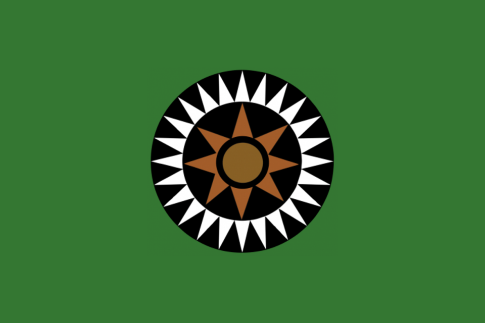
PEUPLE
Wampis
Santiago, Morona et Cenepa
Pêche, agriculture sur brûlis et chasse le long des affluents du nord du Loreto. En 2015 : première autonomie territoriale indigène du Pérou (GAT Wampis).
Aujourd'hui. ~15 000 Wampis. Alliés des Kukama sur le pétrole et le CLPE. Peuple partagé avec l'Équateur.
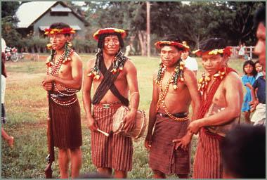
PEUPLE
Candoshi-Shapra
Alto Marañón
Langue isolée, société à clans. Chasse, pêche et agriculture (yuca, plantain). Contact extérieur tardif, peintures corporelles rituelles.
Aujourd'hui. ~2 500 personnes. Communautés de Pacatuba et San Fernando ; pression du logging.
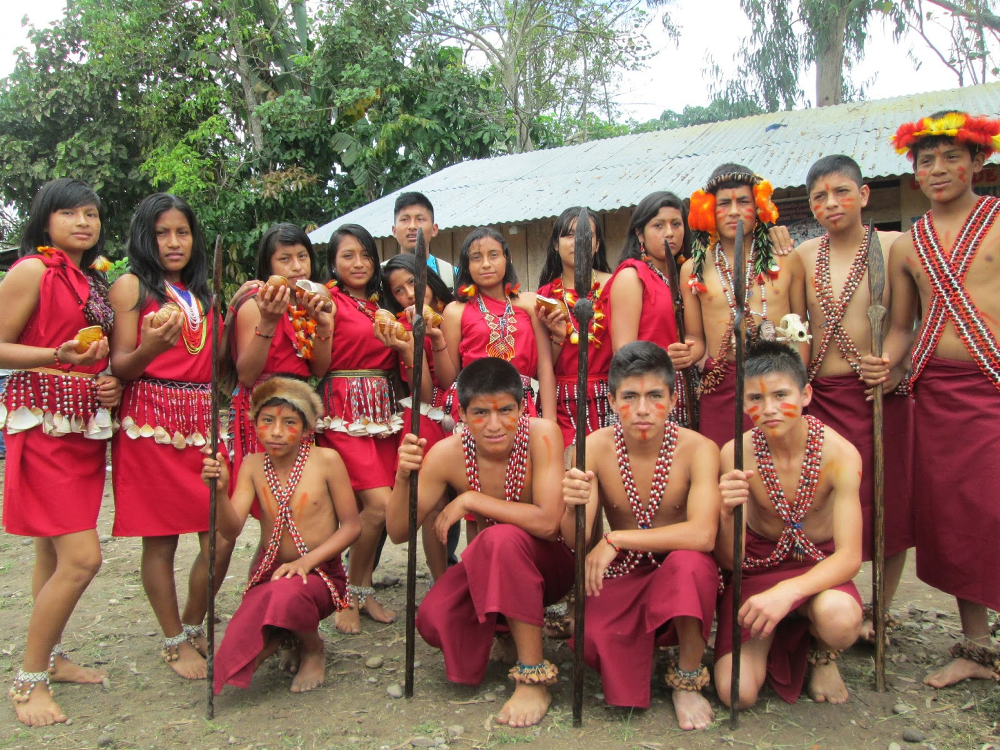
PEUPLE
Awajún
Marañón, Cenepa, Morona et Nieva
2ᵉ peuple indigène du Pérou (jívaro). Chasse, pêche, chacra de yuca. Longue rivalité avec les Wampis, puis alliances. Langue agglutinante (ex-aguaruna).
Aujourd'hui. ~55 000 personnes, dont 42 communautés au Loreto. Acteurs du Baguazo (2009).
01 · Qui vivait en Amazonie · Loreto
Portrait rapideLoreto aujourd'hui
Les peuples de l'Ucayali
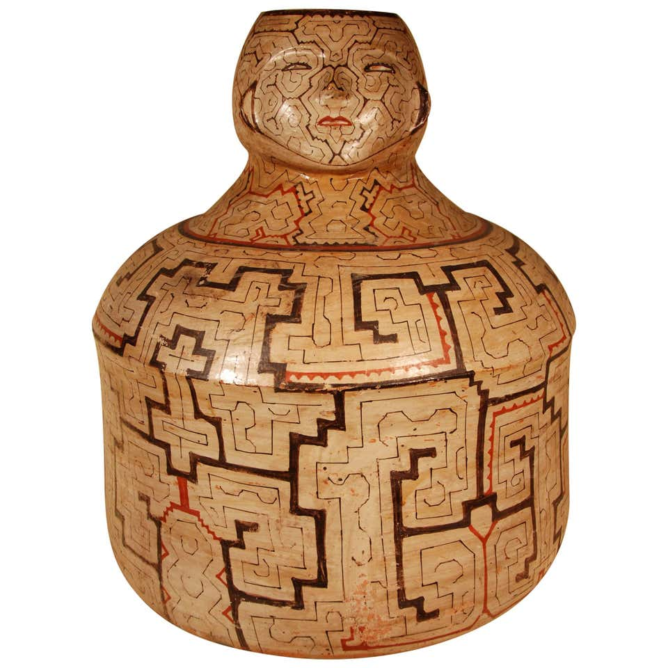
PEUPLE
Shipibo-Konibo
Bassin de l'Ucayali
Célèbres pour le kené (motifs géométriques), l'ayahuasca et la pharmacopée. Chacra, pêche, artisanat. Langue pano, communauté (jono).
Aujourd'hui. ~35 000 personnes à Pucallpa et Yarinacocha. Art kené reconnu internationalement.
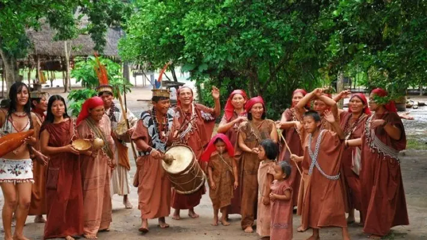
PEUPLE
Asháninka
Haut Perené, Tambo et Ene
Plus grand peuple arawak du Pérou (~55 000). Semi-sédentaires : chacra, chasse, pêche. Résistance historique aux missions et à la colonisation.
Aujourd'hui. Victimes majeures du Sentier Lumineux. Défense territoriale via AIDESEP, cacao familial.
PEUPLE
Amahuaca
Purús, Sepahua et Inuya
Langue pano. Chasse, arc et sarbacane, chacra en forêt dense. Repoussés vers l'est par les Shipibo et le boom du caoutchouc (XIXᵉ s.).
Aujourd'hui. ~4 600 personnes (Purús, Atalaya). Présence aussi en province de l'Ucayali (Loreto). Langue vitale.
01 · Qui vivait en Amazonie · Loreto
Portrait rapideLoreto aujourd'hui
Les peuples de l'Amazone supérieur
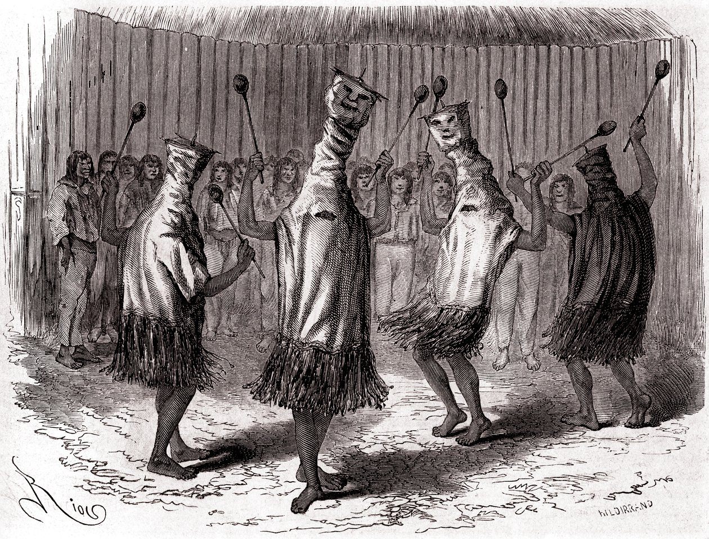
PEUPLE
Ticuna
Tri-frontière Pérou-Colombie-Brésil
Caballococha et Santa Rosa. Plumes, céramique, chacra de manioc. Langue tukano. Commerce fluvial historique entre nations riveraines.
Aujourd'hui. ~7 000 au Pérou (~50 000 tri-national). Écoles bilingues, artisanat et pêche.
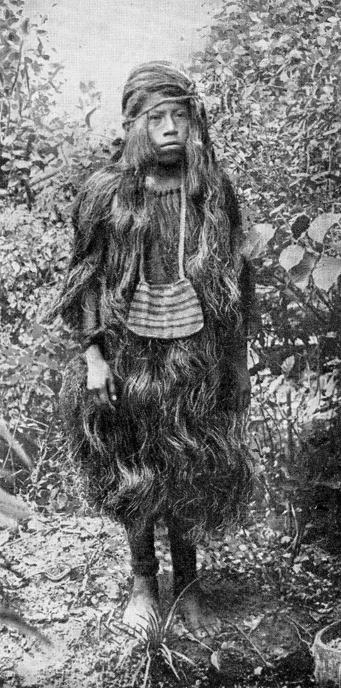
PEUPLE
Yagua
Moyen Amazone et Putumayo
Sarbacane, peinture faciale, chasse et pêche en várzea. Langue isolée (yagua). Décrits dès l'époque coloniale, commerce fluvial avec Iquitos.
Aujourd'hui. ~6 000 personnes. Rencontrables près d'Iquitos et sur le Moyen Amazone.
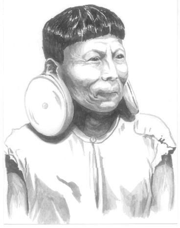
PEUPLE
Maijuna (Maihuna)
Rivière Sucusari, bassin du Napo
Contact jésuite dès 1682. Décimés par épidémies et caoutchouc. Peuple forestier du Napo : chasse, pêche, pharmacopée, transmission orale fragile.
Aujourd'hui. <500 personnes en 4 communautés (Sucusari). Lutte pour une aire de conservation et contre les routes.
01 · Qui vivait en Amazonie · Loreto
Portrait rapideLoreto aujourd'hui
Les peuples de l'Oriente et du Putumayo
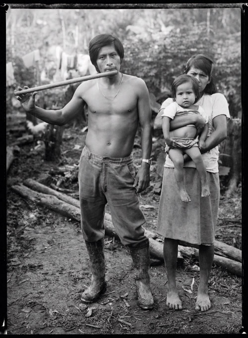
PEUPLE
Ashuar
Oriente péruvien
Peuple jívaro : la wasí (maison) est l'unité sociale. Jardin-forêt, cosmologie animiste (Descola). Résistance à l'extraction pétrolière (Lote 192).
Aujourd'hui. Présence forte dans l'oriente du Loreto. FECONACO, alliances avec les Kukama.
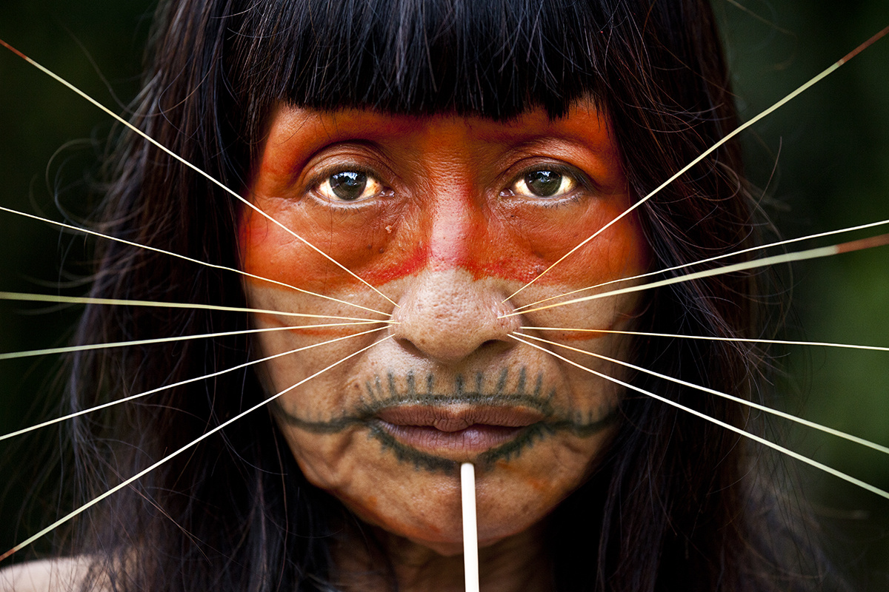
PEUPLE
Matsés
Frontière brésilienne (Yaquerana)
Contact tardif (1969-1974). Chasse, tatouages faciaux, pharmacopée forestière. Langue pano (Mayoruna). Réputation de guerriers redoutables.
Aujourd'hui. ~2 200 personnes. Pression du logging et de l'orpaillage ; territoire revendiqué (ROMP).
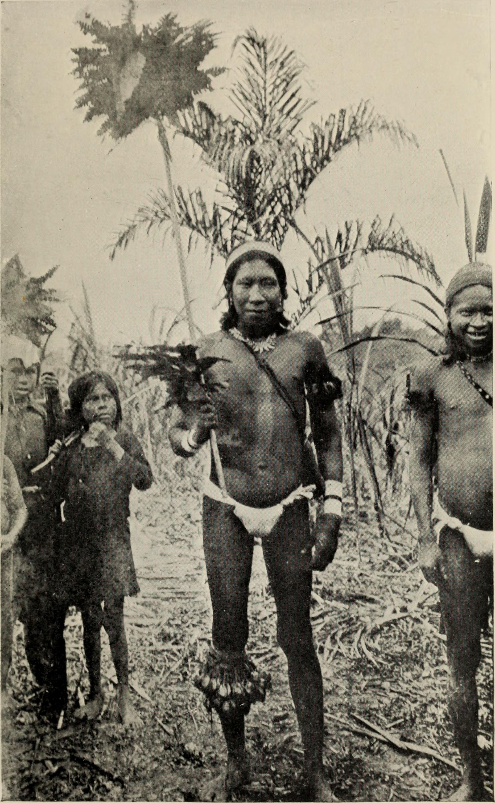
PEUPLE
Huitoto (Witoto)
Bassin du Putumayo
Malocas collectives, chefferie, commerce inter-ethnique. L'une des populations les plus décimées par le boom du caoutchouc (chapitre 03).
Aujourd'hui. Communautés reconnues dans le Putumayo péruvien. Reconstruction identitaire en cours.
01 · Qui vivait en Amazonie · Loreto
Cas singulierlangue isolée
Les Urarina : un cas unique au Loreto
Langue sans parenté avérée, habitat fluvial singulier — justifie un portrait à part, hors carrousel.
Territoire & langue isolée
Bassin du Chambira et bas Ucayali (~5 800 personnes). Langue urarina : isolat linguistique sans parenté avérée avec les familles voisines.
Maisons flottantes
Habitat singulier : villages sur pilotis ou maisons flottantes (banon moo) selon le niveau d'eau. Adaptation fine aux plaines inondables.
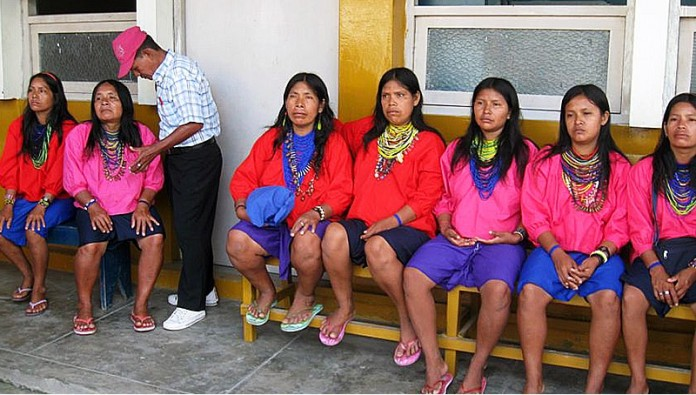
Économie & artisanat
Pêche, chasse, agriculture (yuca, plantain). Célèbres pour les fibres de palmier chambira tressées en hamacs et paniers.
Aujourd'hui
Communautés de Chambira, Dos de Mayo, Pampa Hermosa. Pression pétrolière et acculturation ; transmission orale encore vivante (Ochoa, Olschewski).
01 · Qui vivait en Amazonie
Vidéo · Nota Bonus
On a découvert des cités amazoniennes antiques
Avant d'entrer dans la conquête : les découvertes récentes confirment que la forêt amazonienne abritait des agglomérations denses bien avant l'arrivée des Européens.
« Las primeras noticias del río Amazonas han sido proporcionadas por la expedición de Gonzalo Pizarro »
, J.V. San Román, 1994
02 · La Conquête et les Missions
Francisco de Orellana : la première traversée (1539–1542)
FRISE · 5 ÉTAPES CLÉS
1539
1540
1541
Fév. 42
Sept. 42
Départ de Quito 640 soldats + 4 000 indios
Cordillère & Quijos Zumaco · 2 mois
Baeza · lanchón Orellana + 57 hommes
12 fév. · Amazonas accueil amical
Putumayo · mer île Trinidad
1 · DÉPART
Gonzalo Pizarro part de Quito
Francisco Pizarro envoie son frère Gonzalo à la recherche des richesses du pays de Quijos et de la Canela. Noël 1539 : ~640 soldats et plus de 4 000 indigènes de portage quittent Quito.
2 · CALVAIRE
Cordillère, froid et pertes
Séisme, tempête, passage de la cordillère nevada : morts, désertions, bétail perdu. Les pertes touchent surtout les indigènes porteurs. Halte de 2 mois à Zumaco pour se reposer.
3 · MISSION
Orellana part seul vers l'est
À Baeza (fleuve Quijos), construction d'un lanchón. Gonzalo envoie Orellana + 57 soldats chercher vivres et s'orienter. 10 janv. 1542 : rencontre amicale. 12 fév. : entrée dans l'Amazonas.
4 · DESCENTE
De l'accueil à la guerre
Accueil cordial sur le Napo et à Aparia (~Pevas), 2 mois de halte. À la bouche du Putumayo : attaques en chaîne jusqu'à la mer. Combat au Yamunda (les « Amazones » de Carvajal). Trinidad, fin août 1542.
Pourquoi le changement ? Faute des Espagnols ? Confusion avec une tribu ennemie ? Mémoire de violences passées ?
02 · La Conquête et les Missions
La Relación de Carvajal : ce qu'il a vu
« Et nous avons vu des cités qui brillaient de blancheur, et d'innombrables gens sur les rives, des milliers. »
Gaspar de Carvajal, Relación (1542)
RIVES PEUPLÉES
L'Amazonie n'est pas vide
Carvajal décrit des villages contigus sur des centaines de km, des marchés et des routes. L'archéologie (terra preta, LIDAR) confirme aujourd'hui cette densité — contrairement au mythe de la forêt vierge.
PEUPLES
Omagua, Aparia, Machiparo
Les Omagua : céramique fine, coton, grandes maisons — « la nation la plus évoluée » selon Carvajal. Aparia : halte amicale de 2 mois. Ces peuples seront décimés avant la fin du XVIIᵉ s. (voir ch. 01).
SOURCE & MYTHE
Indispensable, mais à lire avec prudence
Seule source primaire de 1542. Les « Amazones » du Yamunda : probable confusion ou invention — le nom du fleuve en découle. Réévaluée depuis 1990 : villes denses confirmées, légende des femmes guerrières non.
02 · La Conquête et les Missions
Pedro de Ursúa : l'expédition d'El Dorado (1559–1561)
Mandat royal
Le vice-roi confie à Ursúa la découverte d'« El Dorado ». Objectif réel : éloigner les conquistadors sans emploi, dangereux pour l'ordre colonial.
Départ et navigation
Descente du Huallaga, puis Ucayali et Amazone. Ursúa emmène sa maîtresse, Doña Inés : décision critiquée. Vivres et tensions.
Le déclin de l'autorité
Sans or, la faim et les maladies. Le 1ᵉʳ janvier 1561, Ursúa est assassiné dans son hamac, complot de Lope de Aguirre et Guzmán.
Sources
Trois chroniques (Vázquez, Monguía, Zúñiga). San Román (1994) et Hemming (2008) en font la synthèse la plus fiable.
02 · La Conquête et les Missions
Lope de Aguirre : la mutinerie et « El Tirano » (1561)
La prise de pouvoir
Guzmán proclamé « Prince du Pérou », puis assassiné par Aguirre pour régner seul. La terreur commence à bord.
Violence de masse
De l'Amazone à l'Orénoque jusqu'à Margarita. ~70 personnes exécutées sur 300 : Espagnols, métis, indigènes suspectés de trahison.
« Moi, Lope de Aguirre… je me dénaturalise de l'Espagne et te déclare la guerre la plus cruelle que nos forces pourront soutenir. »
Lettre à Felipe II, 1561, unique document autographe conservé
La lettre à Felipe II
Renonciation à son allégeance, rage politique réelle, écriture brutale et puissante. Document exceptionnel.
Mort à Barquisimeto (oct. 1561)
Abandonné par ses hommes, il tue sa propre fille puis est exécuté le 27 octobre 1561. Son corps est démembré.
02 · La Conquête et les Missions
Les missions jésuites : réseau et organisation (1604–1769)
Le système des « réductions »
Regroupement forcé en pueblos organisés : plan en damier, église centrale, travail agricole. Rupture radicale du mode de vie.
Évangélisation par la langue
Quechua (lingua franca) et langues locales. Grammaires et catéchismes en Omagua, Tupinambá, Iquito.
Figures clés
P. Ferrer (1604), P. Cujía (1645), P. Samuel Fritz (cartographe), P. Maroni, bilingues et défenseurs contre les esclavagistes.
Conflits avec le Brésil portugais
Bandeirantes attaquent les missions Omagua. 1710 : destruction de 40 pueblos du P. Fritz par 1500 soldats du Pará.
02 · La Conquête et les Missions
Le P. Samuel Fritz : cartographe de l'Amazonie
1654–1725
jésuite de Bohême, au Pérou dès 1685
20 ans
dans les missions Omagua
1691
1ère carte précise du fleuve, à Lima
Héritage
Sa carte « El Gran Río Marañón o Amazonas », basée sur 5 ans de navigation, resta la référence officielle pendant plus d'un siècle. Elle délimitait les frontières hispano-portugaises et fut copiée partout en Europe.
02 · La Conquête et les Missions
Les Franciscains & la fin des missions : l'expulsion de 1769
FRANCISCAINS
Mission dans la Montaña (haute selva)
Approche plus coercitive que les jésuites, escorte militaire fréquente. Zones : Ucayali, Huallaga, Pachitea. Fr. Manuel Biedma martyrisé en 1687 par les Cashibos. Baptême rapide, évangélisation en espagnol.
RÉSISTANCE INDIGÈNE
Résistances armées & fuites en forêt
Soulèvements : Encabellados (1635, 1666), Omaguas (1709), Lamas (1755). La forêt sert de refuge. Missionnaires tués : P. Ferrer (1611), Fr. Biedma (1687), P. Richter (1695).
L'EXPULSION DES JÉSUITES, 1769 · ROI CARLOS III D'ESPAGNE
1767
1769
1770s
1780s
Décret royal : expulsion des jésuites de tous les territoires espagnols
Départ forcé des derniers jésuites d'Amazonie péruvienne
Effondrement du réseau : missions abandonnées, indigènes dispersés
Tentatives franciscaines de reprise, résultats limités
02 · La Conquête et les Missions
Vidéo · Luke Reagan
Les premiers explorateurs de l'Amazonie
En clôture du chapitre 2 : les traces d'anciennes civilisations et les récits des premières explorations qui ont façonné l'imaginaire de la forêt.
« El caucho fue la maldición de la Amazonia : riqueza para unos pocos, esclavitud y muerte para los pueblos del bosque. »
, J.V. San Román, 1994
03 · L'Ère du Caoutchouc
Le boom du caoutchouc : fortune et terreur (1880–1914)
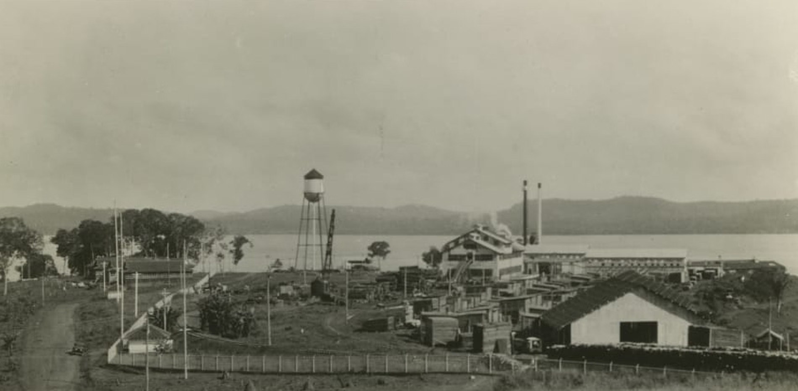
34 ans
Durée du boom (1880–1914) : de la demande industrielle à l'effondrement du monopole amazonien.
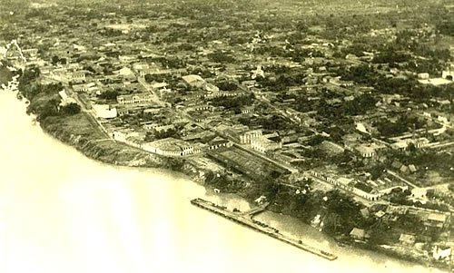
90 %
Du caoutchouc naturel mondial vers 1900 : l'Amazonie brésilienne et péruvienne domine le marché planétaire.
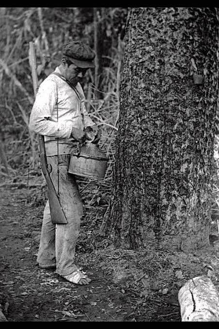
40 000+
Morts et déplacés au Putumayo (1900–1910) : le prix humain de l'extraction du latex.
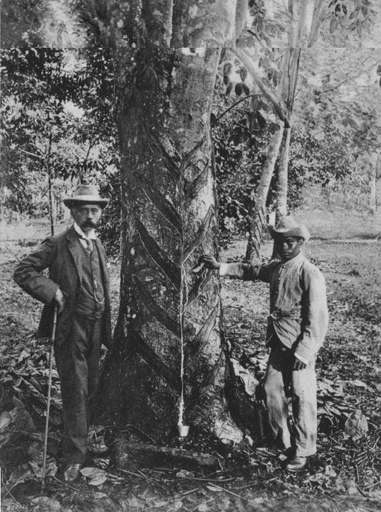
La demande industrielle
Pneumatiques Dunlop (1888), automobile Ford (1908) : le Hevea brasiliensis devient l'or noir du siècle. L'Amazonie fournit la quasi-totalité du latex naturel mondial.
Iquitos, capitale du boom
De 2 000 (1870) à 20 000 habitants (1900). Opéra, Casa de Fierro (Eiffel), bateaux à vapeur, champagne de Paris.
Le système de l'habilitación
Crédit-dette qui piège les indigènes : avance en marchandises remboursable en caoutchouc, servitude légalisée.
L'effondrement de 1912
Henry Wickham avait sorti des graines en 1876 : les plantations de Malaisie, moins chères, ruinent l'Amazonie en 2 ans.
03 · L'Ère du Caoutchouc
Julio César Arana : l'empire du Putumayo
Peruvian Amazon Company
La Casa Arana reconvertie en société à Londres (1907) : actionnaires britanniques, siège en Angleterre pour éviter la justice péruvienne.
Méthodes d'exploitation
Estaciones aux quotas par famille Huitoto. Non-atteinte = mutilation, flagellation, meurtre. Terreur systématique documentée.
Le scandale Casement (1911)
Le consul britannique enquête : la « Blue Book » expose 30 000 Huitotos réduits à ~10 000 en 10 ans. Arana jamais condamné.
Fin de l'impunité, relative
Procès de La Chorrera (1911) : quelques contremaîtres condamnés, vite libérés. Arana élu sénateur en 1919.
03 · L'Ère du Caoutchouc
Les atrocités du Putumayo : l'esclavage en chiffres
~30 000
Huitotos en 1900
~8 000
en 1912 (−75 %)
4 000 t
de caoutchouc 1900–10
1911
rapport Casement
« The Indian has been robbed, beaten, killed, and his family enslaved, in order to enrich those who called themselves masters of the Putumayo. »
Roger Casement
Blue Book, rapport au Parlement britannique, 1912
Le « cepo »
Pilori standard : indigène enchaîné et fouetté devant sa communauté pour quota non atteint. Documenté avec noms.
L'assassinat « motivant »
Exécutions exemplaires : fusillades, noyades, maisons brûlées avec les familles. Concours entre sections.
Le vol des femmes
Servantes forcées à Iquitos, enfants « domestiques ». Destruction des structures familiales Huitoto.
03 · L'Ère du Caoutchouc
Iquitos : la ville du caoutchouc
01/03
02/03
03/03
ARCHITECTURE
La Casa de Hierro & les azulejos
Structure en fer de Gustave Eiffel (Paris 1889), façades d'azulejos portugais. Hôtels, théâtres, opéra, luxe tropical absurde.
Le Baguazo : sang, protestation et pouvoir en Amazonie
Complément à la slide sur les mouvements indigènes : retour sur le conflit du 5 juin 2009 à Bagua, événement fondateur de la résistance awajún et wampis face aux concessions sur leurs terres.